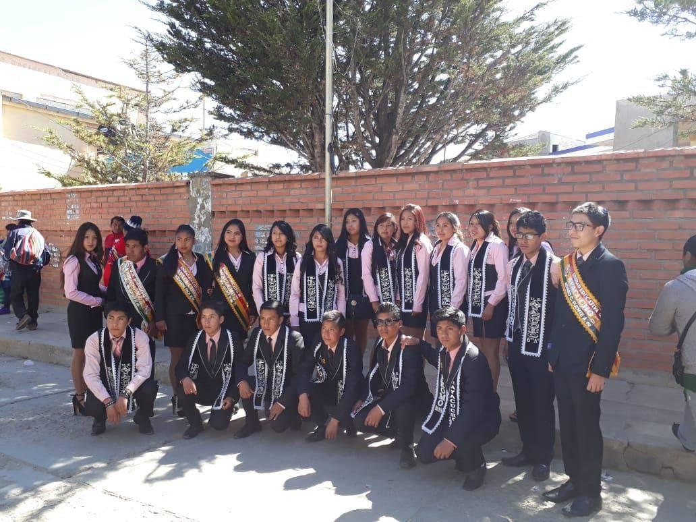

Promocion 2018
Flamantes bachilleres de la gestión 2018.
Conoce nuestros ambientes educativos y recorre virtualmente la Cancha de Futsal.
Flamantes bachilleres de la gestión 2018.
Sala de lectura y material bibliográfico actualizado.
Bodas de oro de la U.E. Ayacucho (1968-2018).
Fútbol, básquet y vóley para el desarrollo físico integral.

Nueva infraestructura moderna y equipada Unidad Educativa Ayacucho Catavi.
Todos los ambientes cuentan con señalización, salidas de emergencia y acceso a internet. El mantenimiento es periódico y se prioriza la seguridad de estudiantes y docentes.